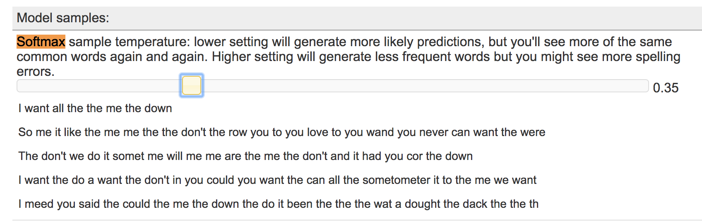
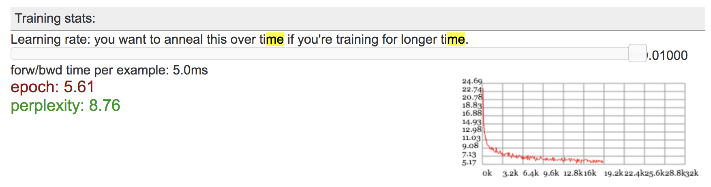
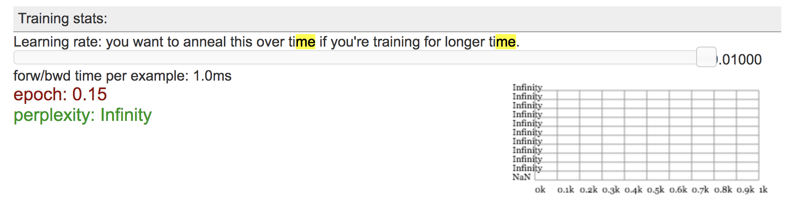

1. LSTMs consist of chained, repeating modules. At a high level, what are the two pieces of information that is passed between modules?
The two pieces of information that can be passed between modules are the old cell state and the old output.
2. "LSTM" stands for "Long Short Term Memory". The name is a reference to a problem with RNNs that LSTMs are designed to solve. What is this problem? At a high level, how do LSTMs attempt to address this problem (what extra information do they add)?
LSTMs are designed to learn long-term dependencies, which regular RNNs are unable to do. In addition to having a chain of repeating modules of a neural network, LSTMs have a repeating module with a different structure. Instead of having a single neural network layer, there are four, interacting in a very special way. These include the forget gate layer (decides what information we’re going to throw away from the cell state) and the input gate layer (decides which values we’ll update) to name a few.
3. The blog post describes two views of RNN/LSTM architectures. In one of these views, we think of the RNN as being "unrolled" into a chain of repeating modules. What values (represented with tensors) are shared between these modules, and what values are different? (The answer is slightly confusing when thinking about training, so just think about using the model for prediction.)
The values that are shared between the modules include the network parameters and the model values whereas the values that are different include the inputs, cell states, and the output that is passed as the input into the next module.
Remember that the purpose of the "forget gate layer" is to allow the network to "forget" some of the current state. Why do you think a sigmoid non-linearity is used here instead of a ReLU nonlinearity (as we were using in most of our previous models)? Hint: look at this image visualizing sigmoid and ReLU https://goo.gl/URp7Hm. Think about the ranges of the output - what is the property of sigmoid's output range that makes it work for our purpose when we multiply with the current state vector?
Sigmoid takes the output and squishes it to be between 0 and 1, whereas ReLU takes the output as 0 if it is negative and the value otherwise. For the forget layer, the maximum value has to be 1 as this represents completly remembering, whereas any value between 0 and 1 would represent a degree of how much you are remembering.
1. Run the model for 10 to 15 epochs, or until you see interesting results. Pause the model and record the perplexity. Perplexity is a measurement of how well the model predicts a sample. A low perplexity indicates that the model is good at making predictions.
After approximately 10 epochs, the model has a perplexity of around 4-5.
2. Adjust the softmax sample temperature, and continue training for a few samples. Softmax sample temperature is a hyperparameter that determines how softmax computes the log probabilities of the prediction outputs. If the temperature is high, the probabilities will go toward zero and you will see less frequent words. If the temperature is low, then you will see more common words, but there may be more repetition. Try to find a temperature that produces the most natural seeming text, and give some examples of your generated sentence results.
The softmax temperature that gives the most natural seeming text is 0.35. Although the sentences do not make any sense, sentences generated with a higher learning rate were gibberish/contained too many special characters and spelling mistakes where as those with lower temperatures contained repetitious words. Here is an image of sentences generated with the chosen temperature of 0.35:

3. Write down any observations about your generated sentence results. Does your text reflect properties of the input sources you used (i.e. vocabulary, sentence length)?
The text generated does indeed reflect properities of the input sources used, as a lot of them contain the word "me", "love" and "I" from Adele's song. The sentences are also very simple in structure.
4. Try changing the model parameters and initialization. Record your observations from at least one of these experiments.
I tried to increase the size of the embeddings to 15, and saw that the perplexity dropped very quickly. I also changed the generator from an LSTM to an RNN with the same default values, and observed the perplexity explode to infinity.
Here are images of my experiments in the order described.


Solution for Music Generation with RNNs.ipynb found here:
Music Generation with RNNs.ipynb
Midi file found here:
base_song_0.mid
gen_song_0.mid